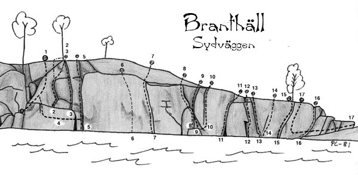

Branthäll
GPS: 61.26363097279574,17.219009399414062

Allmänt
I Söderhamns skärgård ligger ön Branthäll. En tio meter hög sjöklippa.
Kommunikationer
Med båt; Om man har egen båt, eller lånad dito bereder det inga större
problem att ta sig ut till ön, men det går att ta sig dit även utan
sådana möjligheter. Under sommaren kan man åka ut med turistbåten
"Sunnan" och bli ilandsatt på ön, för att bli hämtad med dagens sista
tur, eller följande dags tur. "Sunnan" utgår från kajen mittemot
järnvägsstationen i Söderhamn.
GPS-koordinater: Lat: N 61º 15' 40.43" Long: E 17º 13' 8.36"
Sydväggen

Väggen är en sydvägg av som högst tio meters höjd. Väggens längd är
ungefär 75 m. Lederna startar vid vattenytan eller från stenar i
vattnet. Klättringen sker i sprickor i ovanligt ren och fin granit.
Den intressantaste delen av väggen är den högra halvan. I allmänhet
topprepas turerna, genom att klättraren blir nedfirad på stichten.
- 1
- Våroffer
- 4+
- Kort väggtur tv om "The Giant Flake Eater".
- 2
- The giant flake eater
- 4
- Fritt: Torbjörn Nilsson, 1984 Mitt på väggen finns en stor hylla någon meter över vattnet, vilken är ett bra ställe att landa båten. (På klippan mellan hyllan och vattnet syns en del klotter). Rakt ovanför hyllan finns detta fina flake. Perfekt layback. Kort.
- 3
- Livet
- 6-
- Fritt: Torbjörn Nilsson, 1984 Hörnet till höger om "The Giant Flake Eater", på samma hylla. En verklig finger-tip layback.
- 4
- Korståg
- 5-
- Hangeltravers vid hyllan med klottret. Avslutningen är kruxet.
- 5
- Penguin in Bondage
- 4+
- Fritt: Torbjörn Nilsson, 1984 Från den stora hyllan kliver man ned till vattenytan i högerkanten på hyllan och klättrar sedan den magnifika sprickan till toppen.
- 6
- Archimedes
- 5-/5
- Fin, rätt ihållande tur t v om "Schooldays".
- 7
- Sliding Boot
- 4-
- Relativt lång, grov spricka.
- 8
- Schooldays
- 4+
- Fritt: Torbjörn Nilsson, 1984 Startar från en sten i vattnet. Går rakt upp och snett åt vänster över ett block/flake till toppen.
- 9
- My Way
- 5-
- Fritt: Torbjörn Nilsson, 1984 Startar från samma sten som "Schooldays", och lay-backar uppför den tydliga sprickan rakt ovanför.
- 10
- Spiderman
- 0
- Startar från samma sten som "Schooldays", och sedan kliver man ut till höger och klättrar den mycket tunna sprickan till toppen. Det råder en viss tveksamhet om huruvida denna led egentligen är gjord utan häng eller inte. Minnet sviker, men vi tyckte i alla fall att den var klättrad på den tiden.
- 11
- Bifrost
- 4
- Fritt: Torbjörn Nilsson, 1984 En kort jamspricka som vidgar sig nedåt vattenytan.
- 12
- Batman
- 5+
- Avig klättring med lay-back moves.
- 13
- Goodman
- 4
- Fritt: Torbjörn Nilsson, 1984 Ett rent och snyggt hörn. Startar från en sten.
- 14
- Väggman
- 3+
- En kort väggled några meter till höger om "Goodman".
- 15
- Mot bättre vetande
- 2
- Lätt liten sak
- 16
- Stray Cats
- 2
- Kan man verkligen kalla det här en led? Ett kort hörn som börjar vid vattenytan.
- 17
- En vandring i solen
- 5+
- Travers in från höger, med ett känsligt krux runt en bulle. Avslutas med klättring t h om mot "Bättre vetande".
Kategori:Saknar kolumner
Kategori:Hälsingland Kategori:Trad
Kategori:Hälsingland
Copyright (C) Permission is granted to copy, distribute and/or modify this document under the terms of the GNU Free Documentation License, Version 1.3